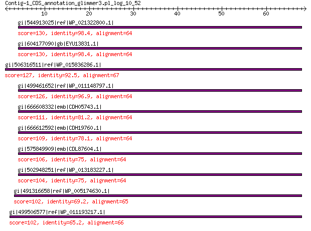

bitscore colors: <40, 40-50 , 50-80, 80-200, >200
 BLASTP 2.2.31+
Reference: Stephen F. Altschul, Thomas L. Madden, Alejandro A.
Schaffer, Jinghui Zhang, Zheng Zhang, Webb Miller, and David J.
Lipman (1997), "Gapped BLAST and PSI-BLAST: a new generation of
protein database search programs", Nucleic Acids Res. 25:3389-3402.
Reference for composition-based statistics: Alejandro A. Schaffer,
L. Aravind, Thomas L. Madden, Sergei Shavirin, John L. Spouge, Yuri
I. Wolf, Eugene V. Koonin, and Stephen F. Altschul (2001),
"Improving the accuracy of PSI-BLAST protein database searches with
composition-based statistics and other refinements", Nucleic Acids
Res. 29:2994-3005.
Database: All non-redundant GenBank CDS translations+PDB+SwissProt+PIR+PRF
excluding environmental samples from WGS projects
49,011,213 sequences; 17,563,301,199 total letters
Query= Contig-1_CDS_annotation_glimmer3.pl_log_10_52
Length=68
Score E
Sequences producing significant alignments: (Bits) Value
gi|544913025|ref|WP_021322800.1| bacterioferritin-associated fer... 130 9e-38
gi|604177090|gb|EYU13831.1| bacterioferritin-associated ferredoxin 130 2e-37
gi|506316511|ref|WP_015836286.1| bacterioferritin 127 4e-36
gi|499461652|ref|WP_011148797.1| bacterioferritin 126 4e-36
gi|666608332|emb|CDH05743.1| regulatory or redox component compl... 111 5e-30
gi|666612592|emb|CDH19760.1| regulatory or redox component compl... 109 3e-29
gi|575849909|emb|CDL87604.1| Bacterioferritin-associated ferredoxin 106 5e-28
gi|502948251|ref|WP_013183227.1| bacterioferritin 104 3e-27
gi|491316658|ref|WP_005174630.1| bacterioferritin-associated fer... 102 1e-26
gi|499506577|ref|WP_011193217.1| MULTISPECIES: bacterioferritin-... 102 2e-26
>gi|544913025|ref|WP_021322800.1| bacterioferritin-associated ferredoxin [Photorhabdus temperata]
gi|530711224|gb|EQC02085.1| bacterioferritin-associated ferredoxin [Photorhabdus temperata
subsp. temperata M1021]
gi|550875219|gb|ERT14252.1| bacterioferritin [Photorhabdus temperata J3]
gi|662546819|gb|KER01457.1| bacterioferritin-associated ferredoxin [Photorhabdus temperata
subsp. temperata Meg1]
Length=64
Score = 130 bits (328), Expect = 9e-38, Method: Compositional matrix adjust.
Identities = 63/64 (98%), Positives = 64/64 (100%), Gaps = 0/64 (0%)
Query 4 MYVCLCNAVSDKTIRNAVRQHHIHSIRELKRIVPVGRDCGKCIRQARELINEEIAQLPKI 63
MYVCLCNAVSDKTIRNAVRQHH+HSIRELKRIVPVGRDCGKCIRQARELINEEIAQLPKI
Sbjct 1 MYVCLCNAVSDKTIRNAVRQHHVHSIRELKRIVPVGRDCGKCIRQARELINEEIAQLPKI 60
Query 64 DNVA 67
DNVA
Sbjct 61 DNVA 64
>gi|604177090|gb|EYU13831.1| bacterioferritin-associated ferredoxin [Photorhabdus luminescens
BA1]
Length=64
Score = 130 bits (327), Expect = 2e-37, Method: Compositional matrix adjust.
Identities = 63/64 (98%), Positives = 64/64 (100%), Gaps = 0/64 (0%)
Query 4 MYVCLCNAVSDKTIRNAVRQHHIHSIRELKRIVPVGRDCGKCIRQARELINEEIAQLPKI 63
MYVCLCNAVSDKTIRNAVRQHHIHSI+ELKRIVPVGRDCGKCIRQARELINEEIAQLPKI
Sbjct 1 MYVCLCNAVSDKTIRNAVRQHHIHSIKELKRIVPVGRDCGKCIRQARELINEEIAQLPKI 60
Query 64 DNVA 67
DNVA
Sbjct 61 DNVA 64
>gi|506316511|ref|WP_015836286.1| bacterioferritin [Photorhabdus asymbiotica]
gi|253991692|ref|YP_003043048.1| bacterioferritin-associated ferredoxin [Photorhabdus asymbiotica]
gi|253783142|emb|CAQ86307.1| bacterioferritin-associated ferredoxin [Photorhabdus asymbiotica]
Length=71
Score = 127 bits (318), Expect = 4e-36, Method: Compositional matrix adjust.
Identities = 62/67 (93%), Positives = 64/67 (96%), Gaps = 0/67 (0%)
Query 1 VLFMYVCLCNAVSDKTIRNAVRQHHIHSIRELKRIVPVGRDCGKCIRQARELINEEIAQL 60
VLFMYVCLCNAVSDKTIRNAVRQHHIHSIRELK IVP+GRDCGKCIR+ RELINEEIAQL
Sbjct 5 VLFMYVCLCNAVSDKTIRNAVRQHHIHSIRELKCIVPLGRDCGKCIRRVRELINEEIAQL 64
Query 61 PKIDNVA 67
PKID VA
Sbjct 65 PKIDKVA 71
>gi|499461652|ref|WP_011148797.1| bacterioferritin [Photorhabdus luminescens]
gi|37528546|ref|NP_931891.1| bacterioferritin-associated ferredoxin [Photorhabdus luminescens
subsp. laumondii TTO1]
gi|36787984|emb|CAE17101.1| bacterioferritin-associated ferredoxin [Photorhabdus luminescens
subsp. laumondii TTO1]
Length=64
Score = 126 bits (317), Expect = 4e-36, Method: Compositional matrix adjust.
Identities = 62/64 (97%), Positives = 63/64 (98%), Gaps = 0/64 (0%)
Query 4 MYVCLCNAVSDKTIRNAVRQHHIHSIRELKRIVPVGRDCGKCIRQARELINEEIAQLPKI 63
MYVCLCNAVSDKTIRNAVRQHHIHSI+ELK IVPVGRDCGKCIRQARELINEEIAQLPKI
Sbjct 1 MYVCLCNAVSDKTIRNAVRQHHIHSIKELKCIVPVGRDCGKCIRQARELINEEIAQLPKI 60
Query 64 DNVA 67
DNVA
Sbjct 61 DNVA 64
>gi|666608332|emb|CDH05743.1| regulatory or redox component complexing with Bfr, in iron storage
and mobility [Xenorhabdus bovienii str. oregonense]
Length=64
Score = 111 bits (277), Expect = 5e-30, Method: Compositional matrix adjust.
Identities = 52/64 (81%), Positives = 57/64 (89%), Gaps = 0/64 (0%)
Query 4 MYVCLCNAVSDKTIRNAVRQHHIHSIRELKRIVPVGRDCGKCIRQARELINEEIAQLPKI 63
MY+CLCNA+SDKTIRN VRQ HI SIRELK VPVG DCGKCIRQARE++NEEIAQLP I
Sbjct 1 MYICLCNAISDKTIRNIVRQQHIRSIRELKDFVPVGSDCGKCIRQAREIMNEEIAQLPPI 60
Query 64 DNVA 67
+NVA
Sbjct 61 NNVA 64
>gi|666612592|emb|CDH19760.1| regulatory or redox component complexing with Bfr, in iron storage
and mobility [Xenorhabdus bovienii str. kraussei Quebec]
gi|666628099|emb|CDG99543.1| regulatory or redox component complexing with Bfr, in iron storage
and mobility [Xenorhabdus bovienii str. feltiae Moldova]
gi|666631611|emb|CDH31961.1| regulatory or redox component complexing with Bfr, in iron storage
and mobility [Xenorhabdus bovienii str. Intermedium]
gi|666634429|emb|CDH25428.1| regulatory or redox component complexing with Bfr, in iron storage
and mobility [Xenorhabdus bovienii str. kraussei Becker
Underwood]
Length=64
Score = 109 bits (272), Expect = 3e-29, Method: Compositional matrix adjust.
Identities = 50/64 (78%), Positives = 57/64 (89%), Gaps = 0/64 (0%)
Query 4 MYVCLCNAVSDKTIRNAVRQHHIHSIRELKRIVPVGRDCGKCIRQARELINEEIAQLPKI 63
MY+CLCNA+SDKTIRN VRQ H+ SIREL+ VPVG DCGKCIRQARE++NEEIAQLP I
Sbjct 1 MYICLCNAISDKTIRNIVRQQHVRSIRELRDFVPVGSDCGKCIRQAREIMNEEIAQLPPI 60
Query 64 DNVA 67
+NVA
Sbjct 61 NNVA 64
>gi|575849909|emb|CDL87604.1| Bacterioferritin-associated ferredoxin [Xenorhabdus cabanillasii
JM26]
Length=64
Score = 106 bits (264), Expect = 5e-28, Method: Compositional matrix adjust.
Identities = 48/64 (75%), Positives = 57/64 (89%), Gaps = 0/64 (0%)
Query 4 MYVCLCNAVSDKTIRNAVRQHHIHSIRELKRIVPVGRDCGKCIRQARELINEEIAQLPKI 63
MY+CLCNA++DKTIRNAVRQ H+ SIRELK +VPVG DCGKC+RQARE+INEEI+ LP +
Sbjct 1 MYICLCNAINDKTIRNAVRQQHVRSIRELKSLVPVGNDCGKCVRQAREIINEEISLLPPM 60
Query 64 DNVA 67
NVA
Sbjct 61 INVA 64
>gi|502948251|ref|WP_013183227.1| bacterioferritin [Xenorhabdus nematophila]
gi|300721362|ref|YP_003710633.1| regulatory or redox component complexing with Bfr, in iron storage
and mobility [Xenorhabdus nematophila ATCC 19061]
gi|297627850|emb|CBJ88396.1| regulatory or redox component complexing with Bfr, in iron storage
and mobility [Xenorhabdus nematophila ATCC 19061]
Length=64
Score = 104 bits (259), Expect = 3e-27, Method: Compositional matrix adjust.
Identities = 48/64 (75%), Positives = 56/64 (88%), Gaps = 0/64 (0%)
Query 4 MYVCLCNAVSDKTIRNAVRQHHIHSIRELKRIVPVGRDCGKCIRQARELINEEIAQLPKI 63
MY+CLCNA+SDKTIRNAV Q HI SIREL+ +VP+G DCGKCIRQARE++NEEIA L I
Sbjct 1 MYICLCNAISDKTIRNAVHQQHIRSIRELRNLVPIGSDCGKCIRQAREIMNEEIASLLPI 60
Query 64 DNVA 67
+NVA
Sbjct 61 NNVA 64
>gi|491316658|ref|WP_005174630.1| bacterioferritin-associated ferredoxin [Yersinia enterocolitica]
gi|404512167|gb|EKA26019.1| bacterioferritin-associated ferredoxin [Yersinia enterocolitica
subsp. enterocolitica WA-314]
Length=68
Score = 102 bits (254), Expect = 1e-26, Method: Compositional matrix adjust.
Identities = 45/65 (69%), Positives = 59/65 (91%), Gaps = 0/65 (0%)
Query 3 FMYVCLCNAVSDKTIRNAVRQHHIHSIRELKRIVPVGRDCGKCIRQARELINEEIAQLPK 62
FMYVCLCNAVSDK IRNAVRQHH H+I++L+++VP+G DCGKCIRQARE++ EE A +P+
Sbjct 4 FMYVCLCNAVSDKVIRNAVRQHHPHTIQQLRQLVPIGTDCGKCIRQAREILIEERANIPE 63
Query 63 IDNVA 67
+++VA
Sbjct 64 MNDVA 68
>gi|499506577|ref|WP_011193217.1| MULTISPECIES: bacterioferritin-associated ferredoxin [Yersinia]
gi|51597991|ref|YP_072182.1| bacterioferritin-associated ferredoxin [Yersinia pseudotuberculosis
IP 32953]
gi|108814022|ref|YP_649789.1| bacterioferritin-associated ferredoxin [Yersinia pestis Nepal516]
gi|145597449|ref|YP_001161524.1| bacterioferritin-associated ferredoxin [Yersinia pestis Pestoides
F]
gi|51591273|emb|CAH22939.1| putative bacterioferritin-associated ferredoxin [Yersinia pseudotuberculosis
IP 32953]
gi|108777670|gb|ABG20189.1| bacterioferritin-associated ferredoxin [Yersinia pestis Nepal516]
gi|145209145|gb|ABP38552.1| bacterioferritin-associated ferredoxin [Yersinia pestis Pestoides
F]
Length=68
Score = 102 bits (253), Expect = 2e-26, Method: Compositional matrix adjust.
Identities = 43/66 (65%), Positives = 59/66 (89%), Gaps = 0/66 (0%)
Query 2 LFMYVCLCNAVSDKTIRNAVRQHHIHSIRELKRIVPVGRDCGKCIRQARELINEEIAQLP 61
LFMYVCLCNAVSDK IR AVRQH H++++L+++VP+G DCGKCIRQARE++ EE+A +P
Sbjct 3 LFMYVCLCNAVSDKVIRKAVRQHQPHTVKQLRQLVPIGSDCGKCIRQAREILIEELANIP 62
Query 62 KIDNVA 67
++++VA
Sbjct 63 EMNDVA 68
Lambda K H a alpha
0.329 0.140 0.443 0.792 4.96
Gapped
Lambda K H a alpha sigma
0.267 0.0410 0.140 1.90 42.6 43.6
Effective search space used: 436879875012